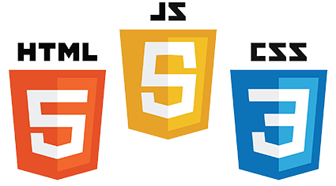
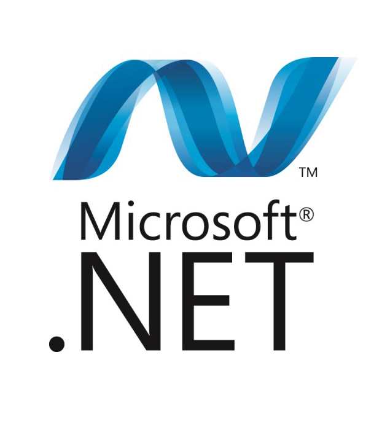

HTML\CSS\JS

In this digital era entire world is moving towards online so, it is a very tough challenge to create a impressive and responsive website that may work for different different platform like computer, laptop and smart phone with different resolution. Better appearance on website creates a better image among competitor. This program is made for those who want to make his/her career in website designing, anyone can learn this program. No need to have any prior programming concept and knowledge, thing that required to learn website designing is only your passion. We promise that after this program you will be able to design a highly impressive website
Outline of Course
- UNIT 1: HTML.
- HTML-5
- CSS, CSS-3
- JS (java script) including J query
- Photoshop
- Plugins (google map ,google icons)
- Dreamweaver
- Word press
- Bootstrap
- Project
Certifications
You can get certifications and Training certificate along with project letter from RCPL and DOEACC on successful completion of the program. Certifications put you on the path to career enhancement and greater success in your chosen profession. Take advantage of a full suite of progressive benefits while increasing your knowledge, effectiveness and marketability.
.Net

Overviews
CODGEN Campus provides Best Dot Net Training as per the current industry standards. Our training programs will enable professionals to secure placements in MNCs. CODGEN is one of the most recommended Dot Net Training Institute that offers hands on practical knowledge / practical implementation on live projects and will ensure the job with the help of advance level Dot Net Training Courses. At CODGEN Dot Net Training is conducted by specialist working certified corporate professionals having 8+ years of experience in implementing real-time Dot Net projects.
Course Objective
CODGEN is one of the foremost Training Institute that aims at catering the multiple needs of IT Companies. We have released “.Net-MVC 5.0 Framework” training which offers you various ways to build up dynamic websites as per your requirements. It includes rapid test driven development. Developer needs to comply with latest web standards. Our expertise and knowledgeable trainers demonstrate how a typical MVC application is designed. And how it works with views, data, models including development of database objects with Entity Framework. We also explore how to secure applications using ASP.NET system, use Java libraries to communicate and pass on data to clients and devop cloud based platforms like AppHarbor and Azure.
Certifications
For .NET You will get Training certificate and Project letter from RCPL and Microsoft on successful completion of the program. It put you on the path to career enhancement and greater success in your chosen profession. Take advantage of a full suite of progressive benefits while increasing your knowledge, effectiveness and marketability.
Visual Basic
Overview:
Croma Campus is one of the foremost Training Institute in Noida that aims at catering the multiple needs of IT Companies. We have released “.Net-MVC 5.0 Framework” training which offers you various ways to build up dynamic websites as per your requirements. It includes rapid test driven development. Developer needs to comply with latest web standards. Our expertise and knowledgeable trainers demonstrate how a typical MVC application is designed. And how it works with views, data, models including development of database objects with Entity Framework. We also explore how to secure applications using ASP.NET system, use Java libraries to communicate and pass on data to clients and devop cloud based platforms like AppHarbor and Azure.
Course Objective:
- What is Visual Basic?
- Learning Visual Basic syntax
- Declaring variables and data types
- Working with numbers, Boolean values, and dates
- Using strings, words, and characters
- Repeating blocks of code with loops
- Evaluating conditions with if, then, and else
- Debugging and handling exceptions
- Managing ordered data with arrays
- Managing application logic with modules
- Defining custom classes
- Storing data with instance fields
Certifications
For Visual Basic You will get Training certificate and Project letter from RCPL and CODEGEN on successful completion of the program. It put you on the path to career enhancement and greater success in your chosen profession. Take advantage of a full suite of progressive benefits while increasing your knowledge, effectiveness and marketability.
ASP

Overview :
Developers with solid skills in the .Net technologies have been in demand for many years. Microsoft released its first version of Visual Studio.NET in 2002, creating a near-instant demand for developers with skills in the .Net framework. In the years since, more developers have acquired these skills, but a shortage remains. In the United States, there are approximately six open positions for every job seeker with .Net qualifications, and salaries are about 8 percent higher than similar development jobs. The shortage may worsen; through 2015, Microsoft.Net grew at a pace that was about twice that of the overall applications market.
Course Objective
- Learn how to design MVC pattern and how it is applied in ASP.NET MVC
- Know the benefits and limitations of using ASP.NET MVC
- Learn to make decisions about application architecture and the choice about data access technology
- Learn how to build a maintainable HTML user interface using the client-side Java Script and Razor view engine
- Use the Web API 2 framework to ease the creation of HTTP
- Gain experience with using adaptive mobile-specific views, rendering, and a view switcher to help a variety of mobile devices
- Learn how to modify ASP.NET MVC by creating custom templates.
Certifications
For ASP.NET You will get Training certificate and Project letter from CODEGEN & MICROSOFT on successful completion of the program. It put you on the path to career enhancement and greater success in your chosen profession. Take advantage of a full suite of progressive benefits while increasing your knowledge, effectiveness and marketability.